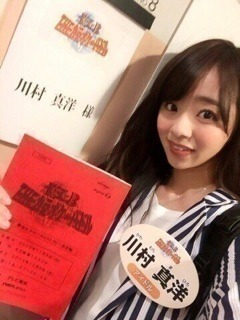
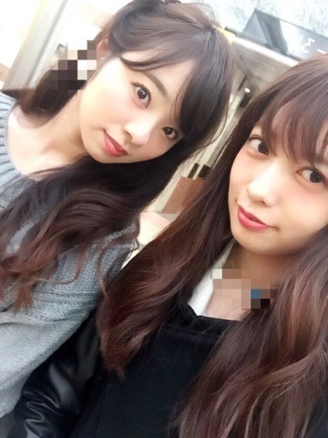
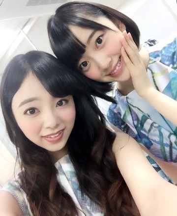
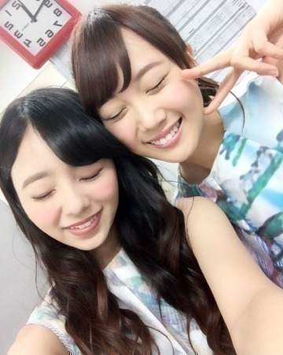

おつかれさまです♡.
川村 まひろです(^_-)
最近は，色々とお仕事を頑張っております．
ありがたいです♡
握手会等もありました(^_-)
来てくださった皆さん，
本当にありがとうございます．
そして昨日は雑誌ボム「BOMB」の撮影&インタビューでした‼︎
メンバーは，（私，らりん，まあや，かりん，純奈）です♡
この5人にあった企画と言うか内容だったので，終始笑いながらのインタビューになりました*\(^o^)/*
本当に楽しかったです！
発売日は，\\12月9日//
是非是非チェックよろしくお願いします‼︎
はい！！！！！
そして、、、もう１つ重要なことがっ、、、 握手会等で私のレーンにカメラが回っていたりだとか，
気になってらっしゃる方も少なからず居たと思うのですが...
私にとってはこれが大きな第一歩です♡
１つ皆さんに恩返しができたのかな...と.
\\\ 『THE カラオケ★バトル』 ///

毎週水曜日 夜6時57分 テレビ東京
司会、堺正章さん・柳原可奈子さん・繁田美貴さんが務める「THEカラオケ★バトル」の出演が決定致しました！
この番組は，ご存知の方も沢山いらっしゃると思います、、 時間帯的にも子供から大人まで沢山の方が見てる番組の様です．
そんな番組に1人で出て行くのは，本当に本当に緊張しました！ また改めてOAされた日に色々と書きたいのですが，，，
自分のためにも，応援してくださっているファンの皆さんの為にも，中途半端な気持ちではできない！本気で頑張りました‼︎笑
収録は1発勝負でやり直しがきかないし，
周りは有名人だらけで，本当に激激激‼︎‼︎ 緊張しました ♡♡笑
OA日は改めて言います‼︎
皆さんのおかげ...
本当にありがとうございます。
私、ゆーり

ゆーりとは肩の揉み合い仲間です♡ノ
私、みおな

みおなと一緒に，LIVE用の面白い煽り方を考えたい。♡笑
私、らりん

ばーーーか♡。
らりんのばーか、大好き。
という事でまた更新しますね(^_-)ノ
以上、川村 まひろでした.＊